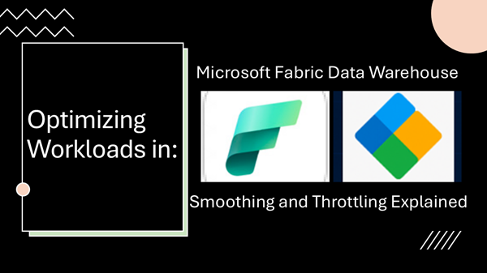

Optimizing Workloads in Microsoft Fabric Data Warehouse:
Smoothing and Throttling Explained

Published: December 6, 2025
Table of Contents:
- Introduction
- Define Fabric Data Warehouse and its usage?
- Compute capacity overview in Fabric.
- Smoothing: Balancing Peaks and Valleys.
- Throttling: Protecting Capacity Limits.
- Overages, representing excess capacity over time, have to be monitored.
- Utilization (Displays CU usage over time.)
- Conclusion
- Partnering with Tech-Insight-Group: Your RAG Implementation Ally
- Call to action
Stay in the loop, follow us on LinkedIn to catch fresh articles every week.
If you're looking to get started with Generative AI, Agentic AI workflows, or migrating your workloads to Microsoft Fabric, partnering with Tech-Insight-Group LLC is your strategic gateway to expert-led consulting and hands-on training services tailored for real-world impact.
Introduction:
Managing compute capacity effectively is critical for organizations leveraging Microsoft Fabric Data Warehouse. Organizations quickly realize this is not just a technical detail—it’s a strategic necessity. The way workloads are managed directly influences performance, cost efficiency, and resource allocation across the entire data environment.
In this article, we’ll set the stage by examining two key mechanisms smoothing and throttling that Fabric uses to balance demand and protect stability. By understanding these concepts, administrators can anticipate system behavior, make smarter decisions about capacity planning, and ensure workloads run predictably without unexpected slowdowns or cost overruns.
What to expect: You’ll gain clarity on how smoothing distributes workloads evenly to avoid spikes, and how throttling enforces limits when demand exceeds available resources. Together, these mechanisms form the foundation for sustainable, optimized performance in Microsoft Fabric Data Warehouse.
Let us begin by defining the Fabric Data Warehouse and examining its resource usage.
What is Fabric Data Warehouse?
Microsoft Fabric Data Warehouse is a cloud-native, fully managed analytics service built on OneLake, designed to centralize enterprise data and deliver scalable SQL querying seamlessly integrated across the Fabric ecosystem.
Performance in this environment is vital because it determines how quickly organizations can transform raw data into actionable insights. Strong performance ensures timely decision-making, cost efficiency by minimizing compute consumption, and a smooth experience for analysts and business users.
Conversely, poor performance slows queries, delays ingestion pipelines, increases costs, and erodes trust in the warehouse, ultimately limiting its ability to scale with growing data demands.
Before diving into the specific mechanisms such as Smoothing and Throttling that help maintain performance, it’s worth asking: what capabilities are available by default to safeguard Data Warehouse performance, and how does Fabric capacity itself define the boundaries within which these safeguards operate?
Compute capacity overview in Fabric
At the foundation of Microsoft Fabric lies capacity, which provides the compute power driving all workloads. Each purchased Capacity SKU entitles organizations to a set of Capacity Units (CUs) shared across Fabric; these units define the resources available and directly constrain how much workload can be processed at any moment.
Is there a way to manage the data warehouse so that workloads are staggered rather than all hitting at once? In other words, instead of letting queries consume the entire compute capacity simultaneously, we can spread resource usage evenly over time.
This keeps operations consistent, avoids sudden spikes, and ensures the warehouse floor runs smoothly without overload. And this, my friend, is where Smoothing comes into play. Now let’s dive into it.
Smoothing: Balancing Peaks and Valleys
Smoothing in Microsoft Fabric Data Warehouse is a built-in functionality, you don’t need to configure or enable it manually. Smoothing is the mechanism that evens out workload demand across a workspace’s defined capacity units (CUs). Instead of allowing one query or pipeline to consume all resources in a sudden burst, smoothing distributes compute usage steadily over time.
This ensures consistent performance, prevents overload, and maintains fairness across multiple workloads that share the same capacity SKU. Administrators benefit from predictable scaling and stable system behavior, while end users experience reliable query response times without sudden slowdowns.
For example, imagine a workspace with 100 CUs where an ETL job tries to spike to 80 CUs instantly. Without smoothing, dashboards running at the same time would be left with only 20 CUs, causing delays. With smoothing, that ETL job’s demand is spread evenly, consuming around 40 CUs steadily, leaving 60 CUs available for concurrent queries. The result is balanced performance across workloads, protecting both system stability and user experience.
Smoothing won't affect execution time. It helps streamline capacity management by allowing customers to size your capacity based on average, rather than peak usage, for instance
- 5 minutes (interactive job): A user runs a complex query that would normally spike capacity instantly. With smoothing, the system spreads its consumption evenly over at least 5 minutes, preventing short-term overload.
- 24 hours (scheduled job): A nightly ETL pipeline that could consume most capacity at once is instead smoothed across the full day, ensuring resources remain available for other workloads without contention.
By now we have a clear grasp of smoothing, so let’s shift our attention to Throttling
Throttling: Protecting Capacity Limits
The root cause of throttling in Microsoft Fabric is capacity overutilization. Each workspace runs on a defined number of Capacity Units (CUs), and when workloads collectively demand more resources than the capacity allows, the system risks instability, contention, and degraded performance. To prevent this, Fabric must enforce limits that protect the environment from being overwhelmed by excessive or unbalanced usage.
Throttling is the mechanism Fabric uses to maintain stability once those limits are exceeded. It does not interrupt in‑flight operations such as queries or stored procedures, but it rejects new requests until capacity is available again.
Background tasks benefit from 24‑hour smoothing and are only rejected after sustained overuse, while interactive tasks like modeling or updating semantic models face stricter rejection rules. During throttling, Dynamic Management Views (DMVs) become unavailable, and users may encounter SQL error code 24801 or messages indicating capacity limits have been exceeded.
Best Practices for Recovery: To recover from overload situations in Microsoft Fabric, administrators should monitor capacity with the Fabric Capacity Metrics app to track utilization, overages, and trends. Once installed and configured, open the report, select the right workspace, and click on the Throttling Tab to analyze throttling activity. Review and adjust workloads or reschedule jobs as needed, and drill down into root causes to optimize usage patterns for long-term stability.

Overages, representing excess capacity over time, have to be monitored.
Overages in Microsoft Fabric are essentially the system’s way of tracking and managing excess capacity usage when workloads temporarily exceed the defined limits. Instead of immediately rejecting jobs, Fabric uses a carryforward mechanism to balance this over time.
- Add % (green columns): Shows how much excess usage is added to carryforward during a 30‑second period.
- Burndown % (blue columns): Represents how much of that carryforward is consumed or “burned down” in the same period.
- Cumulative % (red line): Tracks the total carryforward trend over time, giving admins visibility into whether excess usage is compounding or stabilizing.

By visualizing these elements, the Overages chart helps administrators see when workloads are pushing beyond capacity, how quickly those overages are being reduced, and whether cumulative excess is building up. This analysis is critical for identifying patterns such as repeated spikes from background jobs or user queries, and deciding whether to reschedule tasks, optimize workloads, or scale capacity to prevent sustained overload.
In short, the Throttling tab is your diagnostic dashboard for overload events; showing when throttling happened, which workloads were impacted, and how your capacity recovered.
Utilization (Displays CU usage over time.)
While you’re exploring the Throttling Tab in the Fabric Capacity Metrics app, you can also dig deeper into who or what is consuming your Fabric capacity resources. The app’s Utilization view breaks down usage over time, showing how much capacity is being taken up by background operations (like data refreshes) versus interactive operations (like user queries or model updates).
You’ll see color‑coded charts that make it easy to distinguish billable workloads from preview/non‑billable ones, along with dotted lines that mark your capacity limits. This lets you quickly spot whether spikes are coming from scheduled jobs running in the background or from user‑driven activity, helping you identify the source of pressure on your capacity and make smarter decisions about rescheduling, scaling, or optimizing workloads.

📌 Key takeaway: Smoothing spreads workload consumption over time to avoid spikes, while throttling enforces limits when capacity is exceeded. Together, they safeguard performance and resource efficiency in Microsoft Fabric Data Warehouse.
Conclusion
By leveraging smoothing to balance workload spikes and throttling to enforce capacity limits, Microsoft Fabric Data Warehouse ensures consistent performance and efficient resource management. Administrators who understand these mechanisms can optimize workloads, reduce costs, and maintain reliability across their data environments.
Call To Action
💡 Ready to Take the Next Step?
If you're looking to get started with Generative AI, Agentic AI workflows, or migrating your workloads to Microsoft Fabric, partnering with Tech-Insight-Group LLC is your strategic gateway to expert-led consulting and hands-on training services tailored for real-world impact.
🙏 We welcome your feedback, let’s connect.
Thank you for reading Optimizing Workloads in Microsoft Fabric Data Warehouse: Smoothing and Throttling Explained. If you found this article helpful, feel free to like, share, or leave a comment, we’d love to hear your thoughts.
Stay in the loop, follow us on LinkedIn to catch fresh articles every week.
© 2024 Tech-Insight-Group. All rights reserved.